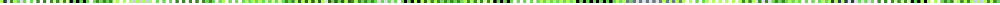

Les données présentes sur votre document ont été comparées avec les valeurs du document original émis par le service et correspondent en totalité.
Votre document peut être considéré comme non falsifié et valide.
Pour respecter la protection des données, aucune information provenant du document original ne pourra vous être affichée. Vous pouvez répéter ce test d’authenticité autant de fois que vous le désirez.